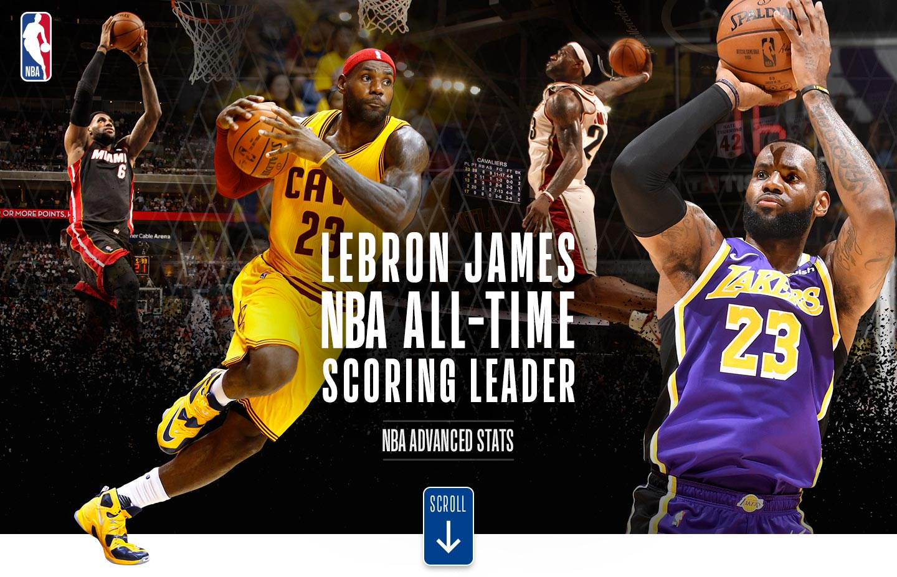
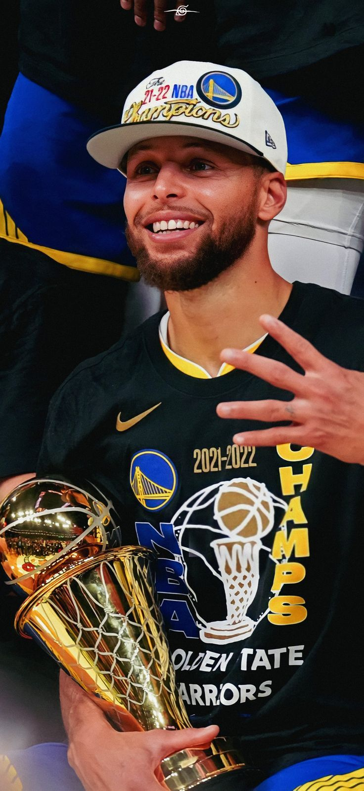
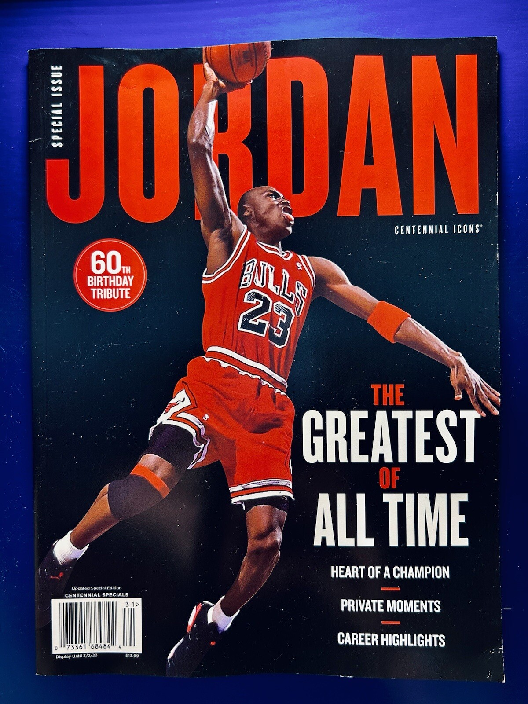

LeBron James: Más Allá de la Cancha
Conocido como "King James", su historia va desde una infancia en la pobreza en Akron, Ohio, hasta convertirse en uno de los atletas más influyentes del mundo. Su dedicación no solo está en la cancha, sino también en su comunidad, a través de la "I PROMISE School" que ofrece educación y apoyo a niños en riesgo.
Giannis Antetokounmpo: De las Calles a MVP
La "Bestia Griega" superó una vida de pobreza extrema y discriminación en Grecia, donde su familia vendía bienes en la calle para sobrevivir. Con un talento crudo pero un compromiso férreo, Giannis transformó su vida y la de su familia, alcanzando el estatus de MVP de la NBA y campeón.
Stephen Curry: El Tirador que Cambió el Juego
Subestimado al inicio de su carrera por su físico y tamaño, Stephen Curry revolucionó la NBA con su inigualable capacidad de tiro de tres puntos. Su historia es un recordatorio de que el talento no siempre encaja en moldes preestablecidos y que la dedicación a dominar una habilidad puede cambiar un deporte entero.
Michael Jordan: La Leyenda que Superó el Corte
La historia de Jordan es un clásico de la superación. Famosamente "cortado" del equipo de baloncesto de su instituto, esa experiencia lo impulsó a trabajar más duro que nadie. Su ética de trabajo, su feroz competitividad y su capacidad para brillar bajo presión lo consolidaron como el mejor de todos los tiempos.